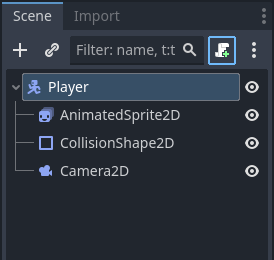

On this page we will finally get to try our hands at programming!
Before we can start programming we need to add a Script to our player! A script is a collection of code that can be attached to a node. In order to attach a script we must go to our player scene, select our player node and press the attach script button at the top of the scene tree. The icon looks like a piece of paper with a small plus sign.
Attaching a new script will open a menu for the details of the script. For now we can keep all of the default settings, but if you would like to change it's name or save location you can (they can also be changed later). After that, a new screen will appear in the viewport. This is our script screen. If you wish to change back to the 2D screen use the screen tabs on the top bar. The new script will have some default code in it. Go ahead and replace it or remove code blocks until you have the following:
extends CharacterBody2D
var gravity = ProjectSettings.get_setting("physics/2d/default_gravity")
func _physics_process(delta):
passEven with the cut back code there is a lot to take in, so lets go section by section
Found at the top of the script, the extends keyword means that this script Inherits from the CharacterBody2D class, meaning it has access to all functions and variables of the extended class. If you wish to see all available variables and methods for the CharacterBody2D node, right click the player node and select Open Documentation.
This is an example of a Variable and calling a Method. A variable is a container that stores a value and a method is a bundle of code that can be called to do something. In this case, we are creating a new variable named gravity and then setting that variable to the default gravity setting in our project settings.
These two lines make up a Method (also known as a function). Functions only run when called, but Godot automatically calls the _physics_process function every physics frame. The parantheses after the function name hold the function's Arguments. Arguments are like variables that can be set when you call a method. For now the only code inside of the function is the keyword pass, which tells Godot to skip this function (for now).
Variables are an incredibly important aspect of coding, as without them the computer would have no way to 'remember' anything between frames or even lines of code! Each variable has a Data Type, which shows what type of data it is storing. Godot generally can automatically assign data types, but it is important to know at least the most common types as mixing them up can quickly cause errors.
Integers are whole numbers. They can be positive or negative, but do not have any decimal places.
Float values are numbers that can decimal places. Likely the most common variable type for most games.
Strings are lines of text. Strings in code must be surrounded by quotation marks "like this".
Sometimes just called bools, booleans can be either true or false.
Instances are specific nodes or objects in the game. For example, we could save the player node in another script as an instance.
These examples are in no way an exhaustive list. If you want to learn more about Godot's data types you can check them out Here
For our player, all we need for now are the player's attributes (like speed, jump velocity, acceleration etc.) and access to our AnimatedSprite2D node. To get started, go a line below the extends CharacterBody2D line and type the following:
@export var speed = 100.0Lets look at each part of this variable declaration.
The @export keyword allows us to change a variable's value from the inspector, meaning we can quickly test different values. This is not required for every variable, but it is nice to have on anything you want to easily change.
The var keyword simply tells Godot we are declaring a new variable, and is required to do so. Without this we would have an error.
This is the name we are choosing for the variable. You can choose how you want to name your variables, but know they cannot have any spaces and should make sense (it will make your life easier in the long run).
And finally we have our initial value. For now this number will seem rather arbitrary, as I have pre selected values that feel good to me, you will have a chance to experiment and get a feel for them yourself soon.
Lets continue on with our player stats. For our initial script we will need acceleration (set to 800.0), friction (1200.0), jump_velocity (-300), gravity_scale (1.0), and terminal_velocity(500.0). Your variables should then look like this:
The section that starts with a # is a comment. Comments are not run as code but are instead used as reminders or organization. I will be peppering them throughtout this course to make finding specific sections of code easier.
# Player Stats
@export var speed = 100.0
@export var acceleration = 800.0
@export var friction = 1200.0
@export var jump_velocity = -300.0
@export var gravity_scale = 1.0
@export var terminal_velocity = 500.0Notice that jump_velocity is negative. This is because in Godot and most other game engines, up is negative and down is positive.
The final variable we need is the instance of our player's AnimatedSprite2D. We can get this by selecting the AnimatedSprite2D node in the scene tree and begin to drag it into the script. After you have clicked it but before letting go press and hold the control key. Drag the node into the script beneath the other variables and let go of the mouse button. Let's rename it to something easier like sprite. Your script should then look something like this.
extends CharacterBody2D
# Player Stats
@export var speed = 100.0
@export var acceleration = 800.0
@export var friction = 1200.0
@export var jump_velocity = -300.0
@export var gravity_scale = 1.0
@export var terminal_velocity = 500.0
# Reference Variables
var gravity = ProjectSettings.get_setting("physics/2d/default_gravity")
@onready var sprite = $AnimatedSprite2D
func _physics_process(delta):
passIn the next section we will continue programming our player!